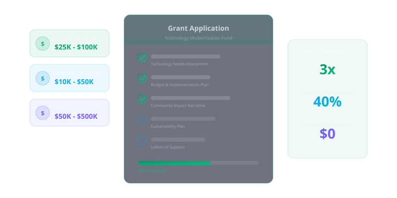

Technology is no longer optional for food banks that want to scale their impact — but funding it remains one of the biggest barriers. The good news is that a growing number of foundations, government programs, and corporate sponsors are specifically funding nonprofit technology initiatives. The challenge is knowing where to look and how to make a compelling case.
Grant writing for technology projects differs from traditional program funding requests. Funders want to understand not just what the technology will do, but how it will measurably improve outcomes. This guide walks you through the process of identifying, applying for, and securing technology grants for your food bank.

Step 1: Define Your Technology Needs
Before searching for grants, you need a clear technology roadmap. What specific problems are you trying to solve? Is it client management, inventory tracking, donor engagement, or reporting? Funders are skeptical of vague requests to "upgrade technology." They want to see a well-defined problem, a specific proposed solution, and measurable outcomes.
Start by conducting a technology assessment. Document your current systems, identify gaps and inefficiencies, and define what success looks like. A statement like "We need to reduce client wait times from 45 minutes to 15 minutes by implementing a digital intake system" is far more compelling than "We need new software."
Step 2: Identify the Right Funding Sources
Technology grants come from several sources, and the most successful food banks pursue multiple channels simultaneously. Foundation grants from organizations like the Technology Association, corporate giving programs from companies like Salesforce and Microsoft, government grants through USDA and state human services agencies, and community development financial institutions all offer technology-specific funding opportunities.
Research each funder's priorities carefully. Some focus on specific geographic regions, others on certain types of technology, and many prioritize organizations serving particular populations. A strong match between your project and the funder's priorities is the single biggest factor in grant success.
Step 3: Build a Compelling Narrative
Every strong grant application tells a story. Start with the community need — who are you serving, and what challenges do they face? Then describe the operational gap — how are current limitations in your technology preventing you from meeting that need effectively? Finally, present the solution — how will the proposed technology close this gap and create measurable improvement?
Data strengthens every part of this narrative. Include statistics about the communities you serve, quantify the inefficiencies you are addressing, and project the expected outcomes of your technology investment. If you have pilot data or results from similar implementations at peer organizations, include those as evidence that your approach is sound.
Step 4: Develop a Realistic Budget
Technology budgets should account for more than just software licenses. Include implementation costs, data migration, staff training, ongoing maintenance, and a contingency buffer. Funders appreciate transparency and realism. A budget that accounts for hidden costs demonstrates that you understand what it takes to successfully adopt technology — not just purchase it.
Consider a phased approach if your total technology need exceeds what a single grant can fund. A first-phase proposal focused on core infrastructure can demonstrate results that strengthen future applications for expanded capabilities. Many funders prefer to see incremental, proven success rather than a single large investment.
Step 5: Demonstrate Organizational Readiness
Funders want to know that your organization can actually implement and sustain the technology. Address this by describing your implementation plan, identifying the staff or partners who will manage the project, and explaining how you will maintain the technology after the grant period ends. A sustainability plan is critical — funders do not want to invest in technology that will be abandoned when their funding runs out.
If you lack internal technical expertise, identify technology partners or consultants who will support the implementation. Letters of support from technology partners, peer organizations, or community stakeholders strengthen your application by demonstrating a collaborative approach.
Step 6: Track Outcomes and Report Impact
Securing the grant is just the beginning. How you implement and report on the project determines your relationship with the funder and your ability to secure future support. Establish baseline metrics before implementation, track progress throughout, and report outcomes honestly — including challenges you encountered and how you addressed them.
Funders value transparency over perfection. A candid report that shows learning and adaptation is more respected than one that glosses over difficulties. When your results are strong, share them broadly — successful technology grants often lead to referrals to other funders and invitations to apply for additional funding.
The funding landscape for nonprofit technology is expanding, and food banks are well-positioned to take advantage of it. With a clear technology roadmap, a compelling narrative, and a commitment to measuring outcomes, your organization can secure the investment it needs to serve more families more effectively.